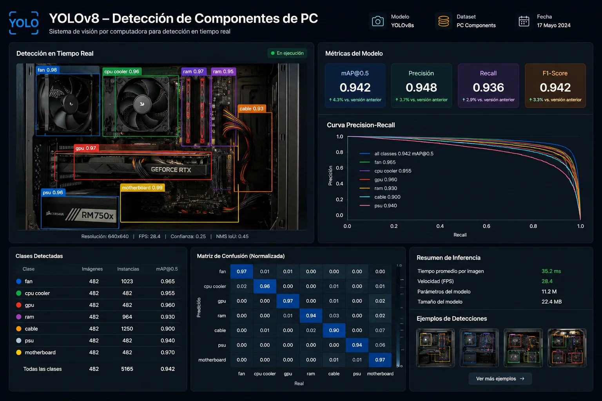
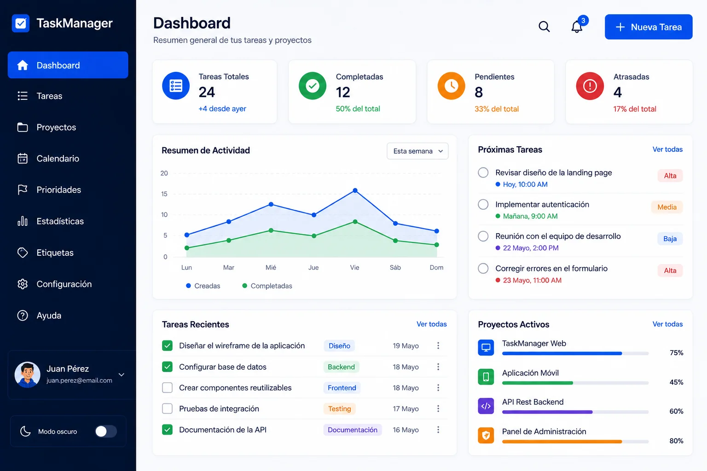
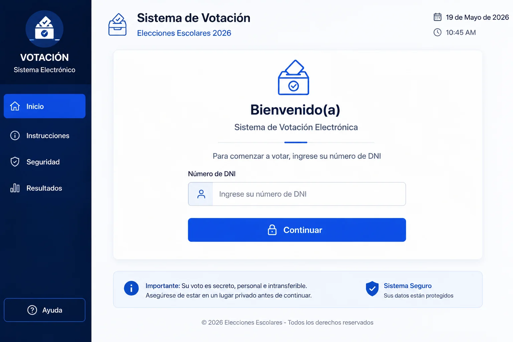
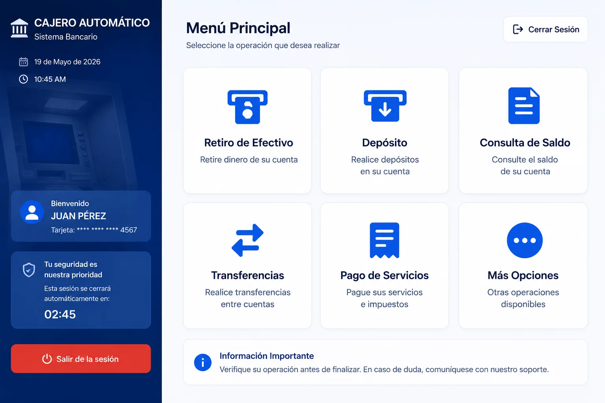
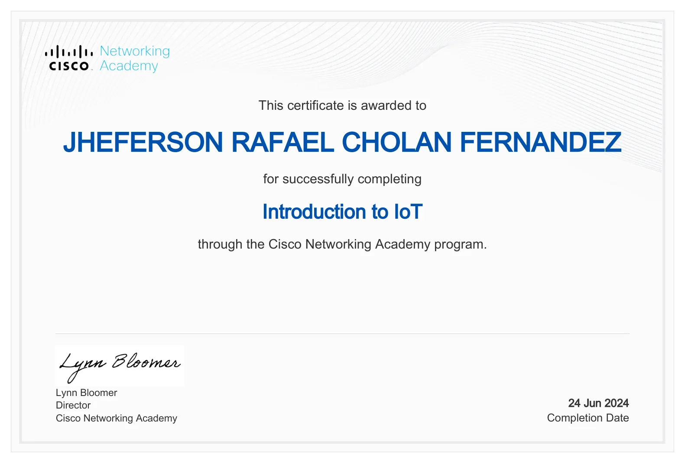
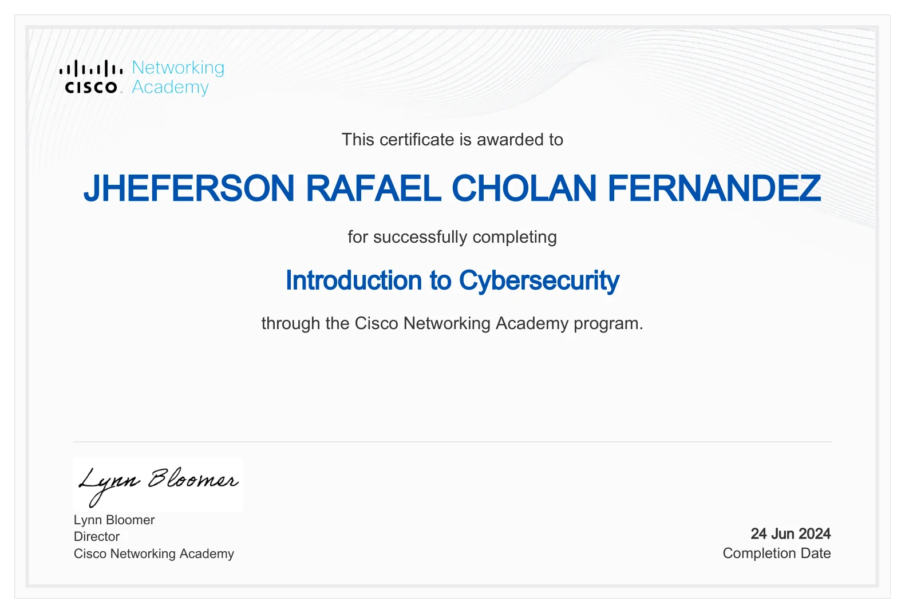
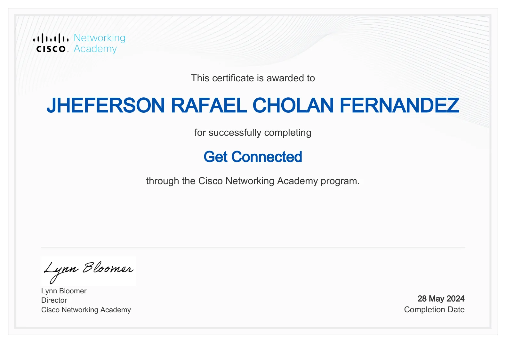
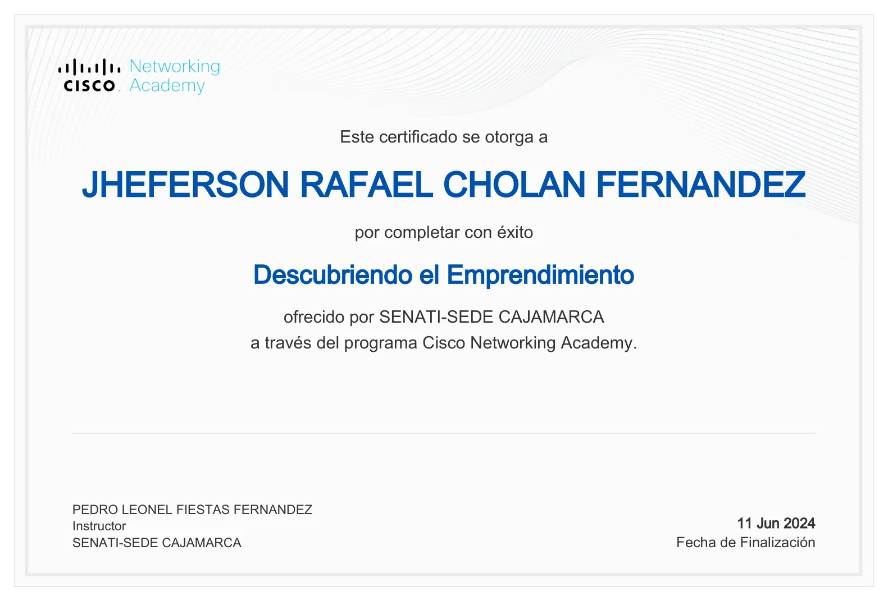

01 / AI · MACHINE LEARNING · 2025
Machine Learning
Análisis y procesamiento de datos con modelos de clasificación y predicción, documentado mediante pantallas de dataset, visualización y resultados.
Ver case studySoftware Engineering · Artificial Intelligence
Soy Jheferson Cholan. Desarrollo aplicaciones web, sistemas de software y proyectos de inteligencia artificial, con foco en funcionalidad, claridad y aprendizaje técnico continuo.
 Disponible para oportunidades
Disponible para oportunidades
Selected work
En lugar de una lista de tecnologías, estos casos muestran qué problema aborda cada proyecto, cómo fue planteado y qué interfaz o flujo fue construido.
Análisis y procesamiento de datos con modelos de clasificación y predicción, documentado mediante pantallas de dataset, visualización y resultados.
Ver case study
Tienda virtual documentada con flujo de inicio, catálogo de productos e inicio de sesión, desarrollada con tecnologías web.
Ver case study
Aplicación de escritorio para registrar, buscar, modificar y eliminar libros, autores y disponibilidad mediante operaciones CRUD y MySQL.
Ver case studyProject archive
Una selección secundaria para mostrar amplitud sin competir con los casos principales.

Exploración visual de detección mediante Python, OpenCV y YOLO.

Interfaz de gestión con dashboard, listado de tareas y formulario.

Flujo visual documentado desde inicio y elección hasta resultados.

Simulador con depósito, retiro, consulta de saldo y validaciones.
About
Mi formación combina desarrollo de software, bases de datos e inteligencia artificial mediante proyectos académicos y prácticos.

Me interesa construir productos digitales claros, mantenibles y conectados con problemas reales, desde interfaces web hasta aplicaciones de escritorio y experimentos de IA.
Aplicaciones y sistemas estructurados con programación orientada a objetos y conexión a datos.
Interfaces responsive y sistemas web con HTML, CSS, JavaScript y PHP.
Trabajo con MySQL, SQL Server, Oracle y flujos de datos utilizados en proyectos.
Python, procesamiento de datos, modelos de ML y exploración de computer vision.
Experience & education
La experiencia se presenta como parte de la historia profesional, sin convertir el portafolio en una copia del CV.
I.E. Ramón Castilla · Cajamarca
Desarrollo de un sistema web de inventario y gestión interna en PHP, con módulos por rol, autenticación, recuperación de cuenta y exportación de datos.
SENATI · Cajamarca, Perú · 6.º ciclo
Formación en desarrollo de software, bases de datos, metodologías ágiles, inteligencia artificial y machine learning mediante proyectos académicos.
Credentials
Credenciales de Cisco Networking Academy conservadas como respaldo de aprendizaje continuo.




Let’s work together
La forma más directa de contactarme es por correo o LinkedIn. También puedes revisar mi código y actividad pública en GitHub.